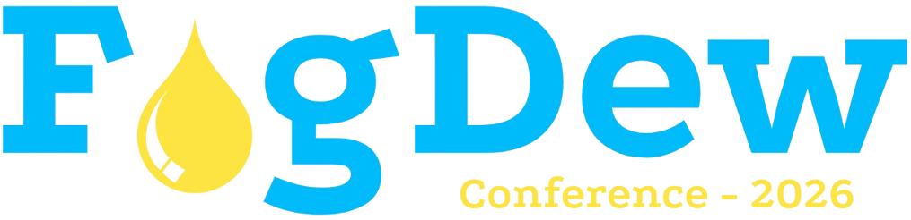

Home
About
About Pune
About IITM
WiFEx
Conference
Poster
Schedule
Key Dates
Venue
Sponsors
Travel, Stay & Visa
Accommodation
Travel
Visa
Contact
Registration
Abstract Submission
About
Organizing Committe
Patron
Dr. M. Ravichandran, Secretary, Ministry of Earth Sciences, Government of India
Scientific Committee
Genki Katata (Scientific Chair), Canon Institute for Global Studies, Japan
Nurit Agam, Ben Gurion University of the Negev, Israel
Jan Cermak, Karlsruhe Institute of Technology, Germany
Jeff Collett, Colorado State University, USA
Glenda Garcia Santos, University of Klagenfurt, Austria
Ismail Gultepe, Environment and Climate Change Canada, Canada
Martial Haeffelin, Institut Pierre Simon Laplace, France
Pierre Herckes, Arizona State University, USA
Otto Klemm, University of Muenster, Germany
Pablo Osses Mcintyre, Pontifica Universidad Catolica de Chile, Chile
Belinda Roux, Bureau of Meteorology, Australia
Martha Scholl, US Geological Survey, USA
Lixin Wang, IUPUI, USA
Kathleen Weathers, Cary Institute of Ecosystem Studies, USA
Suping Zhang, Ocean University of China, China
Local Organizing Committee
Dr. Sachin Ghude
Dr. Gaurav Govardhan
Dr. Abhilash S. Panicker
Mr. Narendra Nigam
Mr. Sujit Maji
Dr. Chaitri Roy
Dr. Sandeep Wagh
Dr. Vrinda Anand
Dr. Avinash Parde
Mr. Prasanna Lonkar
Mr. Akash Vispute
Mr. Sumit Kumar